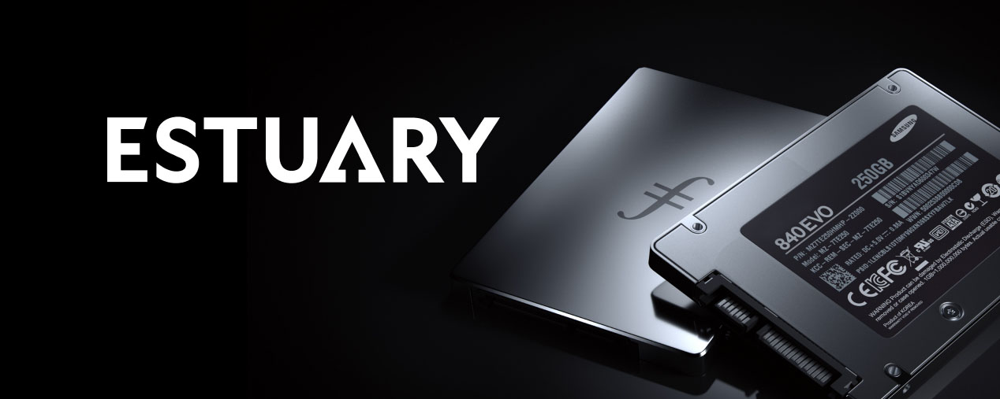
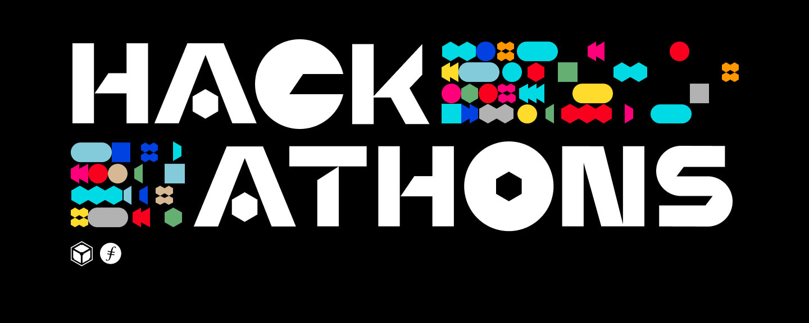
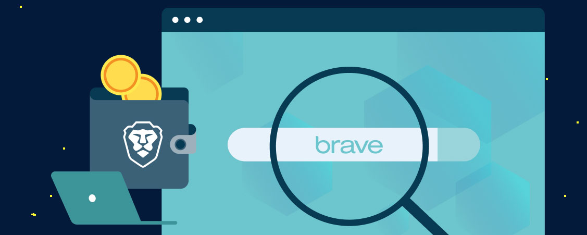
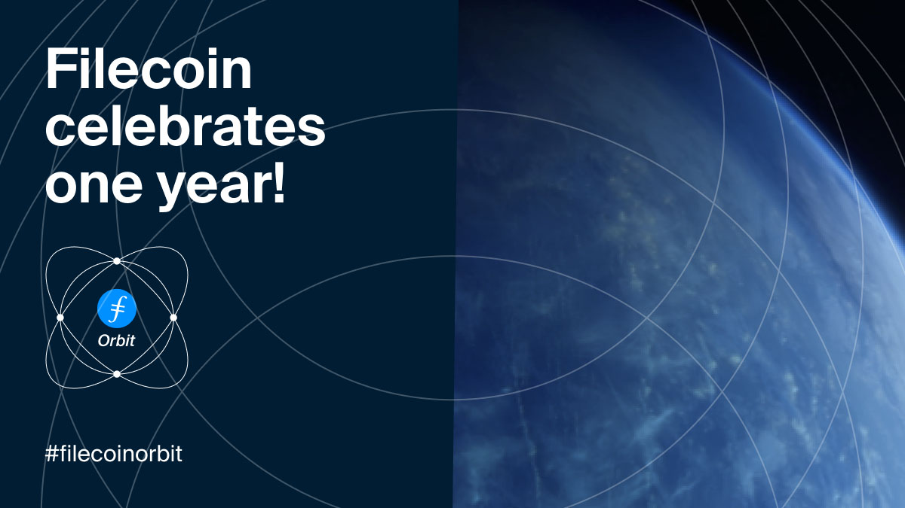

Filecoin Orbit: Filecoin Year One in Review
It’s been a busy year since Filecoin mainnet first launched on October 15th, 2020 — kicking off a new era of distributed, decentralized storage with a network designed to store humanity’s most important information. In 12 short months, the Filecoin network and its surrounding ecosystem have grown massively to what it is today.
The raw statistics are impressive:
- 12 EiB of total network storage power
- 3,362 Filecoin storage providers
- 230+ organizations building on the network
- 465+ new projects entering the ecosystem
- 7,500+ project contributors on Github
- 10,000+ developers participating at hackathons
Our dedicated community members work hard behind the scenes to make those numbers happen, and the Filecoin and IPFS ecosystems have been growing at an incredible rate, with many new initiatives, projects, and collaborations.
It’s important to step back and celebrate the amazing progress made and look forward to future possibilities.
Read on for highlighted Year One updates for all things Filecoin!
Research & Engineering
Over the past year, the Filecoin protocol and network made significant leaps forward — including executing more than eight coordinated network upgrades, shipping 13 Filecoin Improvement Proposals (FIPs), and bringing two additional Filecoin protocol implementations to mainnet (Venus and Forest)!
Since mainnet launch, Filecoin has made significant upgrades to storage provider robustness and ease of use, chain capacity, and bandwidth — more than doubling daily capacity onboarding rate!
Hyperdrive Upgrade
In June 2021, the Filecoin v13 ‘HyperDrive’ Network upgrade unlocked a 10-25x increase in storage onboarding capacity — making Filecoin the first major L1 chain to deploy a significant chain bandwidth increase, just eight months after mainnet launch. Since then, daily storage capacity onboarding has doubled to >60PiB/day, putting it on track to reach ~20EiB by the end of 2021.
This upgrade was possible thanks to innovations in the Filecoin proofs system. Since well before mainnet launch, the Filecoin network has been operating at maximum capacity due to massive storage provider demand, making Filecoin the largest SNARK system in production, producing and verifying over five million SNARKs on a daily basis.
From December 2020 to April 2021, CryptoNetLab and CyptoComputeLab designed and implemented SnarkPack, a novel strategy to scale SNARK proofs through aggregation, unlocking increased scalability, and relieving network congestion. SnarkPack landed in FIP13, bringing a 10-25x improvement in overall chain capacity to the Filecoin network.
Retrieval Markets
Retrieval Markets is one of the most exciting platforms being built on top of Filecoin as it offers CDN-like experience in a fully decentralized way where people can join to offer bandwidth and geographic location to their end users.
The year kicked off with an intensive Research Workshop focused on exploring the possibilities and opportunities for Retrieval Markets. Over 20 researchers met in a VR World to discuss and design new Data Delivery Metering, Graph Forming, Opportunistic Deployments, and Retrieval Market CryptoEconomics.
In April, the first Retrieval Market Builders Summit was held with the participation of the Lotus, PegaSys, Myel, Digital Mob, Textile, Chainsafe, Protocol Labs, IPFS, FilSwan, ResNetLab, and Estuary teams.
Currently, there are several teams building different implementations of Retrieval Market solutions, and you can see their progress every other week at the Retrieval Markets Demo Days.
Filecoin Implementations
Lotus
Lotus was the first alternative implementation of Filecoin, launched in 2019, nearly a year before mainnet launch. Significant improvements have been made with the Filecoin Lotus implementation in the past year.
Lotus Miner changes (MRA) now enable main miner and markets service processes to be split, making nodes more resilient by securing network-critical operations from deal-making cycles.
There was also significant work to make Lotus more scalable for storage providers. A sharded store, Dagstore, was launched to hold large IPLD graphs packaged as location-transparent attachable CAR files. An experimental version splitstore was also launched as an optional improvement to split the monolithic blockstore into cold and hot regions.
Lotus also supported all eight network upgrades, implementation, specification work for 20+ FIPs, and a newly accelerated three-week release schedule.
Forest
Forest, the Rust Filecoin implementation developed by ChainSafe, also saw many improvements this year. It is now fully actors-compatible, and syncs with the latest version of the Filecoin mainnet network. The team plans to launch and share the implementation at the end of October.
The set of functionalities for this MVP release include Message Pool, State Manager, Chain, and Wallet CLI functionality, Prometheus Metrics, and JSONRPC Server. Outstanding bugs from the Sigma Prime Audit are now remediated.
Venus
Just before mainnet launch last October, the IPFSForce team took over maintenance and development of the go-filecoin implementation, renaming it Venus.
The first workable version was up and running by December on the Calibration network and was compliant with the Filecoin Specification, successfully interoperating with Lotus. The first Venus node launched on Filecoin mainnet in January.
Soon, distributed Filecoin Storage Pool architecture design was completed. The first version of the Distributed Storage Pool suite shipped, and the first pool launched on the Filecoin mainnet.
Over the summer, the Filecoin Storage Provider Incubation Program was launched in collaboration with the Filecoin Foundation to help small and medium storage providers join the ecosystem.
Currently, plans are in progress for a proposed sharing rewards design for the distributed storage pool, a more powerful market with storage pool, and the Venus Master program to encourage more storage providers to adopt Venus.
Fuhon
At the start of last year, this Filecoin C++ implementation by Soramitsu was announced in January 2020. Fuhon has since finished with node development including testing, and is currently conducting node API, markets integration, miner integration, and nodes interoperability testing. The team has made considerable progress in native cpp-actors development, but actors are not yet in a production-ready state.
Overall, Fuhon has undergone considerable performance and stability improvements over the last year and is currently in its latest testing stages. Cpp-libp2p was pushed to production-grade level with the help of the Fuhon team. The main goal for this year is to launch the node into production and to attract initial users to the implementation.

Proofs Improvements & zk-SNARKs for the World
Non-interactive zero-knowledge proofs (zk-SNARKs) are a cryptographic technique that allows a prover to convince verifiers that the prover knows some piece of information without revealing the information itself.
The ZK Snarks initiative for Filecoin project has been ongoing for about two years, even before mainnet launch, but much progress has been made in the past twelve months, including the launch of a dedicated zk-SNARKs for the World website where more information can be found.
Recent updates include enabling storage providers to resume sealing after interruptions, the ability to deploy distributed Window PoSt, multicore-SDR (optimized/fast sealing), integration of a new Bls12-381 implementation, and general increase of performance across the board. Rewriting the GPU tree from scratch resulted in massive performance gains such as a nearly 50% speedup.
Overall, the codebase has been restructured for better modularity and readability, with added support for more architectures such as ARM64 and Apple M, and an added API for proof aggregation. zk-SNARK generation has been optimized by more than 80%.
VDF
A collaboration between Protocol Labs, Ethereum Foundation, Filecoin Foundation, Electric Coin Company (ECC), and Supranational was launched. The goal is to produce an efficient and cost-effective computational VDF (Verifiable Delay Function). This will involve developing both fast evaluation, as in sequential computation, and proving, as in parallel computation.
The intention is to develop optimized CPU (evaluation), GPU (proving), and eventually ASIC (evaluation and proving) implementations. Currently two proving systems are being explored: Halo2, which is published by ECC, and Nova, published by Microsoft Research.
Generalized proving ASICs and GPU optimizations are expected to improve the economic cost of general proving — not just VDF proofs — in either of these systems by 5-10x.
Protocol Labs and Cryptosat are also collaborating to explore the possibility of a space VDF. One high-level idea is to exploit the speed of light as a ‘hard speed limit’ on communication latency — potentially allowing us to achieve a better Amax (Attacker’s Maximum Advantage) than theoretically possible from algorithmic and hardware optimizations, based on computational speed.
In this model, delay is based on minimum communication time between satellites in verifiable positions.
Drand
Drand, the distributed randomness beacon used by Filecoin’s leader elections, celebrated its one-year anniversary earlier this year, completing one million rounds of undisrupted service!
Drand, which is powered by its network of independent partners, the League of Entropy (LoE), has expanded since the Filecoin launch last October and added two new members to the consortium: ZenGo and the Quantum Resistant Ledger (QRL).
The LoE is expanding currently and looking for new members to join the mission. Get in touch with them if you’re ready to contribute to the mission of making drand a foundational Internet protocol.
Drand is also being updated with a couple of new features in order to serve a wider variety of applications. Time Lock Encryption will effectively mitigate threats related to Maximal Extractable Value (also referred to as MEV on Ethereum or front running attacks, in DeFi).
Drand will soon also provide support for higher frequency randomness beacons, running in parallel to the current (original) 30-second beacon. This update will enable drand to be leveraged by a broader set of web2 and web3 use cases.
ConsensusLab & ConsensusDays
ConsensusLab is the newest Protocol Labs research group, launched in July 2021 to become a hub for the collaborative advancement of human knowledge on scalable decentralized consensus, with an immediate focus on the next generation of Filecoin consensus.
Its launch event, ConsensusDays 21, included 24 talks and brought together some of the leading researchers in consensus and related topics, paving the way for future collaboration at scale.
Product Use Cases
Since Filecoin launch, there has been tremendous growth and progress in developer tooling and new use cases able to leverage the unique values of cryptographically verifiable, robust, decentralized storage that Filecoin has to offer.
In the past year, 30PB+ of valuable data onboarded to the Filecoin network, with some of the world’s most valuable data, including millions of NFTs, growing web3 application data, scientific and culturally significant datasets, governance proposals, and more.
Around 10,000 developers are building on the IPFS and Filecoin stacks, with many more people using the products. It’s been an amazing year for Filecoin adoption and developer community growth, and Filecoin Year 2 should see even more exciting developments.

NFT.Storage
NFT.Storage launched in April 2021, providing off-chain storage of NFT metadata and assets in a free, simple service. Data uploaded to NFT.Storage’s HTTP endpoint is persisted onto Filecoin and made available to the public IPFS network.
The service also provides users with properly formatted IPFS URIs to reference their metadata in their smart contracts — a critical step to get right to ensure their NFTs are truly making a permanent reference to the intended data.
The product has grown quickly since launch, and now has over 5.5K users and six million NFTs stored in Filecoin. These NFTs include those minted by some of the largest marketplaces and minting services in the space, including OpenSea, OneOf, Makersplace, Jigstack, Curio, and more.
Beyond supporting these users, the team also works on NFT School, helping people understand the technical concepts behind NFTs in a hands-on fashion, and niftysave, an effort to index all NFTs and save their metadata and assets onto Filecoin to ensure no NFT data is lost.

Web3.Storage
Web3.Storage launched in August 2021 as a simple interface for developers to store data and retrieve data from IPFS and Filecoin. A free service with familiar storage interfaces (including a JS client library and HTTP API), it is one of the easiest ways for developers to upload data to Filecoin, handling much of the complexity of interacting directly with decentralized storage.
With over two thousand users and five million uploads since launch, Web3.Storage is growing quickly. As a result, developers new to web3 are experiencing first-hand how content addressing and trustless storage enables lighter backend infrastructure, decentralization, and less lock-in, while experienced web3 developers are able to quickly integrate IPFS and Filecoin with their production dapps.
Textile
Textile, a company that is rolling out tools to make it faster and easier for developers to build decentralized apps on IPFS and Filecoin, launched permissionless Filecoin storage bridges on Ethereum, Polygon, and NEAR. A Filecoin Deal Auctions pilot for clients to efficiently onboard massive datasets to the network was also rolled out with currently 2TiB per day and growing ~25% per week. As of October 1, the pilot has reached 205TB in active Filecoin deals.

Estuary
The work for Estuary kicked off in March and has grown into a reliable, scalable solution for participating in the Filecoin network today. Estuary nodes have their own libp2p stack with full IPFS and Filecoin features to help anyone make Filecoin storage deals in a multitude of ways. Estuary has made over 23,000 successful storage deals, stored over 150 TiB of files, collaborates with many companies and groups within the Filecoin ecosystem, and stores data with over 100 storage providers from around the world.
Those interested can run their own Estuary nodes in the cloud. Web developers can clone or fork the web client and provide a similar experience for their own users, or they can just use our hosted API to make storage deals with any public data they have.
Web2 Use Cases
Internet Archive
Internet Archive is a digital library with the mission of providing universal access to all knowledge. In April 2021, Internet Archive announced a collaboration with Protocol Labs on bringing its digital resources to the decentralized web. In July, the foundation kicked off an initial proof of concept project, onboarding a 2016 web archive dataset (about 200TiB in size) to Filecoin.
Currently, the dataset is being successfully onboarded to the network. The project is planned to complete before the end of year, with more Internet Archive datasets lined up to be stored on Filecoin.

Starling
In June 2021, Starling Lab, a collaboration between Shoah Foundation, the largest genocide archive in the world, and Stanford University was announced. Starling Lab is dedicated to using decentralized tools to advance human rights.
The first initiative is to create a decentralized web archive for Shoah Foundation’s collection of 55,000 testimonials of genocide survivors from the Holocaust, the Armenian Genocide, and the Rohingya crisis, which represent a 4PiB dataset. The project is actively underway, with testimonials actively being uploaded to the Filecoin network.
Slate
Slate launched in September 2020, originally as a moodboarding site, but has undergone a number of transformations since then to become a one-stop platform to save and interact with users’ bookmarks and files. Existing storage options augment user memory, but do little to improve the ability to recall and retrieve things seen or saved.
Slate combines automatic saving, powerful search, and speedy organization to create a product that helps people make better use of their own data.
Slate is already at 14k users and 81k files stored and growing. It offers a consumer and web2 friendly outlet for users to experience IPFS and Filecoin storage, with all of the related benefits.
Ecosystem
The long-term growth of the decentralized web can only happen through the cultivation and empowerment of a wide variety of stakeholders, aligning them with the success of IPFS, Filecoin and libp2p, and other projects. Engaging with major partners is vital to showcase new use cases, bridges to other web3 ecosystems, and bridges to web2 users.
New developers enter the Filecoin ecosystems through hackathons, education, and support, and they in turn create projects and businesses through grants and accelerator programs. Growth capital and support also help businesses accelerate their growth.
Web3 storage providers can grow, prosper and expand geographically with the support of the entire ecosystem.

Hackathons
Since its first event HackFS, which took place in July, the Filecoin and IPFS hackathon program has reached and connected more than 10,000 developers and entrepreneurs worldwide.
Today, the team runs around five hackathons each month lasting from days to several weeks and frequently partnering with collaborators across the entire Filecoin ecosystem.
Through dedicated mentorship support, a whole range of high-quality educational formats, and with exciting challenge statements and prizes, developers and entrepreneurs are successfully encouraged and empowered to solve significant problems, ship innovative applications and shape the future of the web to be more decentralized, robust, and secure.
Participants of past events have gone on to raise millions of dollars in funding as they have grown hackathon submissions into the next generation of winning web3 ventures. We look forward to welcoming the next generation of builders at our upcoming hackathons. Visit hackathons.filecoin.io to learn more and sign up for our mailing list.
Web3 Collaborations
Filecoin continues to grow and gain adoption as the de facto storage layer of web3, and developers continue to explore and expand upon all the possibilities of the protocol.
Recent months have been filled with exciting collaborations with the web3 community. The collaborations are multi-faceted and include joint grant programs for developers, filecoin storage bridges, joint hackathons and investments.
With smart contract systems, Filecoin is now integrated with Ethereum, Polygon, NEAR, Hedera Hashgraph, Flow, and more projects on the way. Developers in these ecosystems have discovered the ease of using Filecoin for data storage.
Chainlink, a blockchain oracle, is a key collaborator and integrated with Filecoin in May. Chainlink recently launched an extensive joint grant program to spur the development of new applications, such as data bounties and miner insurance. Other exciting collaborators in the video vertical include Livepeer with a co-mining initiative and Videocoin on video NFTS.
Filecoin was added to the Web3 Index in Sept 2021 as a fundamental and key driver of the web3 stack and new strides into Filecoin token liquidity continue to be made.
New Startups in the Ecosystem
Almost 50 startups have graduated from our partner’s accelerator programs over the past year and many of those founders have participated in hackathons or received grants as they progress through the Filecoin ecosystem. There are an incredible number of amazing founders in our ecosystem and Filecoin is excited to support them.
In February 2021, Filecoin Launchpad hosted their demo day with 13 teams from 11 countries around the world emerging from a 12-week immersive accelerator bridging the IPFS, Filecoin and Ethereum communities.
The presentations from the first cohort as well as the 20 teams from 13 countries who participated in the second cohort can be watched online. Applications for Tachyon 6 winter cohort are now being accepted.
Filecoin partnered with LongHash Ventures to launch the Filecoin Frontier Accelerator. You can learn more about the program here and watch 11 amazing team presentations from the first demo day in April.
Filecoin is also collaborating with Outlier Ventures to launch the Filecoin Base Camp accelerator to catalyze the growth of new ecosystem projects that are building the next generation of applications that will drive adoption of web3.
Another exciting, ongoing collaboration to fuel new startups is the Techstars Filecoin Accelerator, which is currently accepting applications from companies building the future of web3.
Storage Providers
Straight out of the gate, the Filecoin network committed storage at a much faster rate than initially anticipated and very quickly in April achieved maximum baseline minting level. Since then the network has only gone from strength to strength.
In July, the Filecoin community agreed to approve a new FIP to rebrand and replace the “miner” terminology that was somewhat limited and narrow-focused, and the more suitable “storage provider” term has been adopted. In the journey to onboard more Filecoin storage users in the next stage, this rebranding helps in emphasizing the utility and value of the network to enterprise customers.
Since inception, there has been an incredible growth of new storage providers coming online around the world. To date, there are more than 3,300 Filecoin systems up and running and between five to ten new systems being onboarded daily.
With more than 60PiB of new capacity coming online daily, there is a vast amount of space available to store useful data. The cost of storing data on Filecoin is nearly free with the amount of capacity that is available today.
In June, the storage provider community stepped up and came together to form a new storage provider working group in North America and Asia. One of the first implementations of the working group was to support the community in their efforts to create better documentation and tooling.
In August, a new Filecoin bounty board was created to support that effort. Since then external experts have been participating in delivering new best practices. New ideas or requests are always welcome on the board.
Application Research Group (ARG)
In February, The Application Research Group (ARG) started experimenting with prototypes using Filecoin, IPFS, libp2p, and IPLD. As of now, the ARG has created an open-source framework for building websites compatible with IPFS out of the box, developer examples with well-known ecosystem partners like Textile, and high-fidelity prototypes such as an offline Filecoin+Ledger Wallet.
In March, the ARG created Estuary to help improve the experience around making Filecoin storage deals. In the near future, many network operators around the world may be running Estuary nodes and making Filecoin storage deals for as much meaningful public data as possible.
Asia Expansion
Asia is a critical area for expansion of the Filecoin and IPFS ecosystems and growth in the region continued at pace in several key countries during the first year after launch. Several key initiatives that focus on the region launched this year.
Asia Hackathon Season is a multi-month hackathon series aimed to identify, accelerate, and highlight the innovative Filecon and IPFS development work being done by startups and developers in Asia. Filecoin partnered with Wanxiang, Polygon, Dapper Labs, and other major regional collaborators to put the first 2021 season together. The program is still underway but has already seen many exciting submissions from contributors across the region.
To expand Filecoin’s presence in Korea and Japan communities, local language outreach and community building in Korea and Japan rolled out in August, and meetups are hosted for these communities to learn more about Filecoin.
Another notable initiative has been the promotion of geographical diversification from storage providers in China to other countries, as well as building key strategic relationships across Asia, such as NFTStar and more.

Browsers
Bringing the old web along in the transition to web3 is a gargantuan task, but progress is being made with browsers.
2021 kicked off with the Brave browser shipping support for running a full IPFS node in their desktop product — the first time a major browser has done so. Brave browser support for Android followed in the spring. With Brave now celebrating over 30 million monthly active users, additional features such as Filecoin support in a native wallet are in the works.
Also in the spring, Opera shipped IPFS support in their iOS browser Opera Touch, completing support for IPFS addressing across their entire top-tier browser product line. Eventual support for IPFS in the Chromium browser remains a key goal, with Igalia laying the foundation by negotiating a major refactor to the codebase that will make it easier to add non-HTTP protocols.
On the mobile front, support for IPFS in Puma Browser is on the way and Berty is close to releasing a libp2p transport for proximity technologies such as MDNS and Bluetooth LE, which will unlock IPFS applications in local and personal collaboration contexts — an important new aspect of web applications.
Summer ended with Browsers 3000, a six-week hackathon which brought together a number of friends in the web3 space working to change the platform of the web itself. The Browsers 3000 summit hosted 13 projects to share their vision of the web, and the grand prize winner was NetSepio, a distributed reporting and notification system for malware, phishing, and other dangers online.
Onward to Filecoin Orbit Year 2
Thanks to contributions from across the community, the Filecoin network has made great strides in its first year.
Nevertheless, there is still a lot of work to be done going forward to make Filecoin the best storage network for storage providers, users, developers, entrepreneurs, and fellow web3 visionaries. In doing so, we’ll together create new decentralized systems with which our most valuable digital assets, sensitive data, and irreplaceable knowledge can be stored.
